Benchmarking de uso de IA como diferencial estratégico · apresentação executiva ilustrada
O que o mercado já fez com IA
Onde estão as empresas líderes do agro, da bioenergia e de setores vizinhos, como chegaram lá e para onde a IA aponta no campo, em imagens.
1.423
fontes públicas no catálogo
4
empresas com ficha de benchmark
10
notas temáticas
4
sessões executivas
Contratante
Acelen Energia Renovável
Documento
Apresentação executiva ilustrada do benchmark de uso de IA
Nº / Versão
BIA-ACL-AE-02 · Rev. 00 · versão de trabalho v0
Data
23/11/2026
O estudo
Metodologia · escopo, frentes e etapas
Três frentes e quatro sessões executivas, sobre evidência pública e verificável
Frente 1
Benchmark estratégico
Como as empresas líderes usam a IA como diferencial: o que funcionou, o que falhou e por quê.
4 fichas no mesmo padrão: Suzano e Bayer, indicadas pela Acelen; Deere e DJI, a corrida EUA × China
Setores de referência: bancos e energia, de maior maturidade digital
Casos de sucesso e insucesso, com a lição
Frente 2
Maturidade e roadmaps
Um referencial para a Acelen se situar no mercado e enxergar os próximos passos.
Régua de 5 estágios × 4 dimensões, a partir da revisão dos frameworks de mercado
Checkpoints e dependências de cada salto
Roteiro que o mercado seguiu, com o ritmo
Frente 3
Tendências
O que deve moldar a IA no agro, separando tendência consolidada de sinal emergente.
Custo de uso da IA e IA generativa
Autonomia, perenes e colheita, satélites e modelos de fundação
EUA × China e impacto ambiental da IA
Leitura primária
4 sessões executivas
Conversas semiestruturadas com executivos e lideranças técnicas de grandes empresas do agro e da bioenergia.
De 13 a 21/10/2026, de 30 a 70 minutos cada
Roteiro de 10 temas alinhados às frentes, validado pela Acelen em 09/10
Sem nomes: pessoas e empresas só no agregado
1
Mobilização e desenho
Painel, dimensões, protocolo de pesquisa e ficha padrão
2
Coleta e análise
Fontes públicas em rodadas; fichas e notas por frente
3
Sessões executivas
Registro anonimizado e síntese por frente
4
Síntese
Régua, posicionamento, roteiro e tendências
5
Entrega e workshop
Report Final, base de dados, assistente de IA e esta apresentação
Visão macro, horizonte de cinco anosIA em sentido amplo: generativa, preditiva, visão, robótica e autonomiaBrasil primeiro, com EUA, China e setores mais madurosToda afirmação com fonte e páginaFora do escopo: diagnóstico interno e recomendação de ferramenta
FontesDescritivo da metodologia (BIA-ACL-MT-01, Rev. 01), seções 1 a 9. Números do acervo: catálogo do estudo, contagem de 23/11/2026 (página Números do sistema).
Metodologia · o que buscamos no mercado e quanto material foi lido
1.423 fontes públicas, 89% delas de 2024 a 2026
O que procuramos em cada fonte
O número com unidade, escopo, ano e página
Adoção
Quem usa IA, em quê e quanto: empresas, produtores, empregados.
Resultado medido
Ganho, redução de custo ou de insumo e retorno, com a linha de base.
Maturidade
O estágio de cada empresa em cada dimensão, pela evidência pública.
Ritmo
Quanto tempo cada etapa levou, do alicerce à escala.
Casos e lições
Sucessos e insucessos, com a causa declarada.
Fontes por ano de publicação
Catálogo do estudo, 23/11/2026
Fontes por grupo
Rodadas por tipo de fonte, por empresa e por tema
37,1 mil
páginas lidas em 1.040 documentos guardados, e 334 páginas web
854
fontes citadas nas fichas, nas notas e no Report Final
4 + 10
fichas de empresa e notas temáticas, todas com fonte e página
4
sessões executivas, com registro anonimizado e síntese por frente
FontesDescritivo da metodologia (BIA-ACL-MT-01, Rev. 01), seções 1 a 9. Números do acervo: catálogo do estudo, contagem de 23/11/2026 (página Números do sistema).
A São Martinho trabalha a conectividade no campo desde 2015; o Itaú está na nuvem desde 2017.
[M1222, p. 27] [M1238, p. 2]
Governança
3 de 4
A governança de IA é a dimensão mais atrasada
Três das quatro empresas do painel estão no estágio 2 em governança; dados e aplicações chegam ao 3 e ao 4.
[M784, p. 1-3] [M336, p. 22, 39] [M397, p. 25, 27] [M876, p. 5]
IA generativa
67% × 33%
Proibir funciona pouco
O envio de dado sensível a IA pública é mais comum onde a IA é proibida (67%) do que onde não há política (33%).
[M110, p. 73, 77]
IA preditiva
−61%
O valor medido está na dor medida
Incêndios em áreas de plantio da Suzano, 2024 contra 2023, com torres com IA e esforços integrados.
[M335, p. 69]
Retorno
2 a 4 anos
O retorno demora e se concentra
É o prazo de um caso típico de IA até dar retorno; 20% das empresas ficam com 74% do retorno.
[M064, p. 1-3] [M080, p. 3]
Campo
1 : 8
Autonomia em nichos, com supervisão
Um operador supervisiona até oito pulverizadores autônomos em pomares; não achamos autonomia plena em operação regular.
[M1284, p. 1]
Fontes[M1222] São Martinho, p. 27 ↗[M1238] About Amazon, p. 2 ↗[M784] Bayer AG, p. 1-3 ↗[M336] Suzano, p. 22, 39 ↗[M397] Deere & Company, p. 25, 27 ↗[M876] DJI, p. 5 ↗[M110] University of Melbourne e…, p. 73, 77 ↗[M335] Suzano, p. 69 ↗[M064] Deloitte, p. 1-3 ↗[M080] PwC Brasil, p. 3 ↗[M1284] Deere & Company, p. 1 ↗
Suzano: torres com IA contra incêndio, com uma pessoa confirmando cada alerta
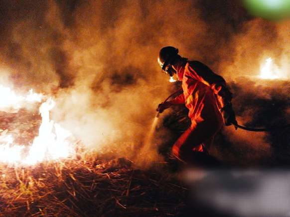
Suzano · combate a incêndio no relatório de 2024Imagem: Suzano, Relatório de Sustentabilidade 2024, p. 69 · [M335] fonte ↗
133
Iniciativa
torres com câmeras e IA que reconhecem a fumaça, acompanhadas 24 horas (dez/2024).
−61%
Resultado
de incêndios em áreas de plantio em 2024, contra 2023; a empresa credita o número a esforços integrados, não só à IA.
85%
Consequência
dos focos controlados antes de virar ocorrência de maior impacto, nos três anos até ago/2026.
Leitura nossa. Um operador confirma cada alerta antes de mandar a brigada: a tecnologia encurta o tempo, a decisão segue humana.
Fontes[M335] Suzano, Relatório de Sustentabilidade 2024 — o ano do…, p. 69 stszprdscentind.blob.core.windows.net ↗[M769] Suzano, Suzano utiliza Inteligência Artificial como…, p. 2-3 suzano.com.br ↗[M753] Suzano, Suzano investe em inovação tecnológica para…, p. 2-4 suzano.com.br ↗
Pulverização seletiva: a máquina decide planta a planta; a regra continua humana
Iniciativa
Câmeras e IA na barra: a máquina aplica só onde há planta daninha, dentro de uma sensibilidade definida por pessoas.
−76%
Resultado
de herbicida, em média, em 5 lavouras de soja (Iowa State, 2024), medido por terceiro.
+280%
O risco
ao ano de caruru no ensaio de 3 anos do Arkansas, na sensibilidade mais baixa.
Leitura nossa. Economizar demais hoje pode custar o controle amanhã: a máquina decide, a pessoa calibra.
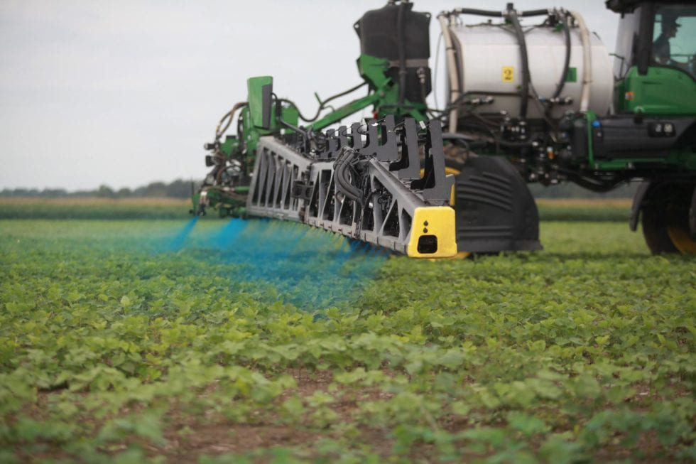
Ensaio do Arkansas · o jato em azulImagem: University of Arkansas, 2025, p. 1 · [M1296] fonte ↗
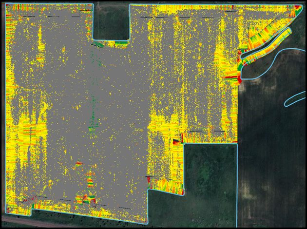
Iowa State · em amarelo, onde a barra aplicouImagem: Iowa State University, 2024, p. 7 · [M1286] fonte ↗
Fontes[M1286] Iowa State University Extension and Outreach, Precision Spraying Technology (Integrated Crop…, p. 1-2 crops.extension.iastate.edu ↗[M1296] University of Arkansas System Division of Agriculture, Precision Agriculture Research Measures…, p. 2-3 aaes.uada.edu ↗
Uber: o orçamento de IA acabou em quatro meses; o controle veio pelo consumo
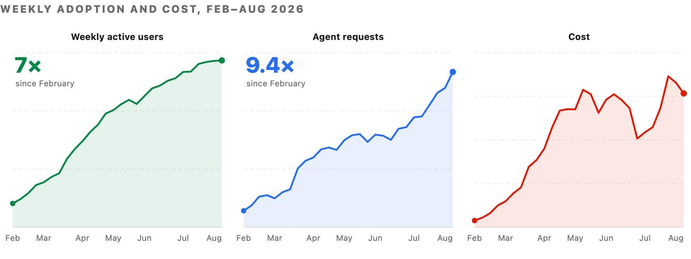
Uber · uso e custo, fev a ago/2026Imagem: Uber, blog de engenharia (2026), p. 2 · [M995] fonte ↗
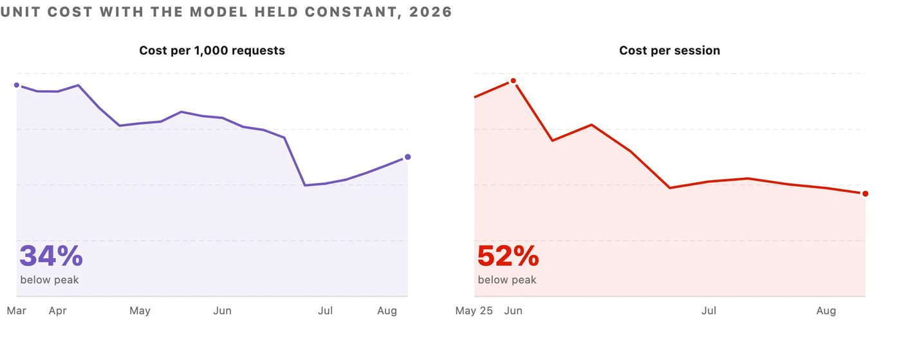
Uber · custo por sessão com o mesmo modeloImagem: Uber, blog de engenharia (2026), p. 3 · [M995] fonte ↗
≈ 4 meses
Problema
durou o orçamento de IA de 2026; os custos tinham crescido 6 vezes desde 2024.
US$ 1.500
Iniciativa
de teto por mês, por funcionário e por ferramenta; depois, faixa única de gasto, com alertas.
−52%
Resultado
no custo por sessão, contra o pico de jun/2026, com o mesmo modelo.
Como ler · números declarados pela empresa; o estouro do orçamento vem da imprensa
Fontes[M989] The Pragmatic Engineer, How Uber uses AI for development: inside look, p. 3 newsletter.pragmaticengineer.com ↗[M986] TechCrunch, Uber caps employee AI spending after blowing…, p. 2 techcrunch.com ↗[M941] Fortune, Uber burned through its entire 2026 AI budget in…, p. 3 fortune.com ↗[M995] Uber Technologies, Running a Software Factory Efficiently at Uber…, p. 2, 15 uber.com ↗
O caminho que se repete: seis fases, em ordem parecida
1
Alicerce de dados e de campo
Dados e nuvem; no agro, conectividade no campo e centro de operações.
2015São Martinho: início da rede no campo
2
Estrutura dedicada
Um centro, área ou grupo responsável pela IA.
2019Vale: centro de IA aberto
3
IA preditiva em dores medidas
Incêndio, insumos, manutenção e logística, com resultado medido.
−50%bp bioenergy: incêndios, 2019–2025
4
IA generativa: da proibição ao assistente
Restrição depois dos primeiros vazamentos; depois, assistente para todos.
110 milPetrobras: com acesso em dez/2023
5
Governança e democratização
Política com treinamento e triagem de demandas.
99%São Martinho: treinados na política de IA
6
Agentes com cautela
Plataformas de agentes com limites de autonomia.
5%têm os controles completos (BCG)
Fase 1 · São Martinho: centro de operaçõesImagem: São Martinho, Relatório Anual 2017/18, p. 23 · [M1222] fonte ↗
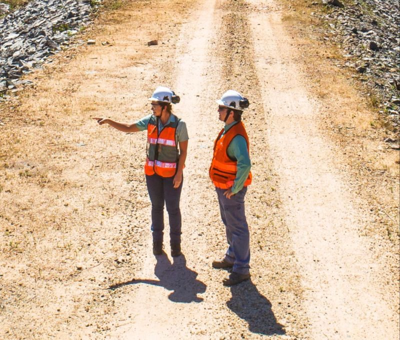
Fase 2 · ValeImagem: Vale, anúncio do centro de IA (2019), p. 3 · [M1251] fonte ↗
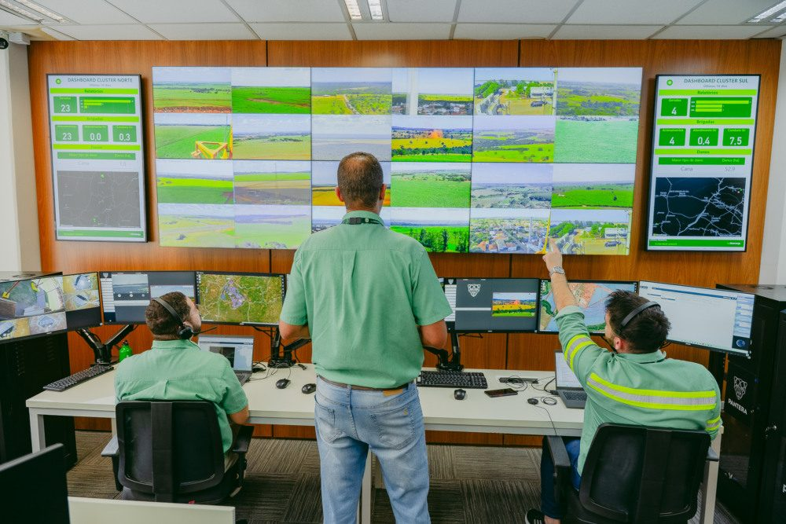
Fase 3 · bp bioenergy: monitoramento de incêndiosImagem: Jornal Cana (2026), sobre a bp bioenergy, p. 2 · [M1217] fonte ↗
Fontes[M1222] São Martinho, Relatório Anual de…, p. 27 ↗[M1251] Vale, Vale creates Artificial…, p. 1 ↗[M1217] Jornal Cana, bp bioenergy reduz incêndios…, p. 1 ↗[M1245] Mobile Time, ChatGPT da Petrobras está…, p. 2 ↗[M1240] Agência Petrobras, Petrobras cria ferramenta com…, p. 1 ↗[M357] São Martinho, Relato Integrado 2025/2026, p. 46 ↗[M1199] Boston Consulting Group, The Formula for Agentic AI…, p. 10 ↗
Proibir funciona pouco; quando a empresa oferece o canal, a conta oficial cresce
Usuários de IA generativa, por tipo de conta
Netskope, medição de tráfego na clientela, em um ano
As duas mudanças aconteceram juntas; a fonte não prova que uma causou a outra.
67%
Onde a IA é proibida
enviam dado sensível a IA pública; onde não há política, 33% (KPMG e Univ. de Melbourne, 2025).
90%
Hoje
das organizações bloqueiam algum aplicativo de IA, em média 10 (clientela da Netskope).
O caminho
Canal oficial: conta da empresa, dado protegido no contrato, registro de uso e regra de dado clara e treinada (leitura nossa).
Fontes[M110] University of Melbourne e KPMG International, Trust, attitudes and use of artificial…, p. 73, 77 kpmg.com ↗[M1049] Netskope, Cloud and Threat Report: 2026, p. 2-3, 10 netskope.com ↗
do pulverizador autônomo em cerca de 60 mil ha antes de virar produto, em abr/2026, segundo a empresa.
≈ 150 + 100
Lavoura
robôs nos EUA e no Brasil, segundo a Forbes.
1 : 8
Supervisão
um operador para até oito pulverizadores autônomos em pomares: a supervisão segue humana, a distância.
4
Quebras e recuos
empresas de robótica de campo em 2024 e 2025; nas com causa declarada, o capital acabou antes da escala.
Fontes[M325] Jacto, Pulverizador autônomo:…, p. 2-3 ↗[M253] Forbes Brasil, Solinftec Lança IA…, p. 7 ↗[M1284] Deere & Company, John Deere Acquires GUSS…, p. 1 ↗[M1319] The Gazette, Appointment of Liquidators –…, p. 1 ↗[M1298] AgFunderNews, FarmWise AI-powered weeding…, p. 2 ↗[M1301] BODACC, Annonce n° 2651 du BODACC A…, p. 1-2 ↗[M1303] California Employment…, WARN Report for 7/1/2025 to…, p. 10 ↗
Nas perenes, a falta de gente puxa a máquina; a colheita é o gargalo
60% · 50%
Palma de óleo
da força de trabalho e do custo de produção estão na colheita.
21 → 86 ha
Por trabalhador
na colheita da palma: à mão e com colhedora de médio porte (estudo citado pelo MPOB).
26% × 8,7%
Brasil
mecanização contra automação ou digital como principal resposta à falta de mão de obra (CNA/Cepea, 2026).
Leitura nossa. A falta de gente é o motor declarado, mas a resposta é mais mecanização que IA. Na macaúba, antes da máquina vem a cultivar.
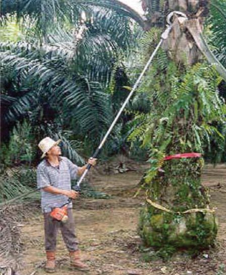
Palma · cortador motorizado em varaImagem: Teoh e Lai, Journal of Oil Palm Research (2024), p. 2 · [M1385] fonte ↗
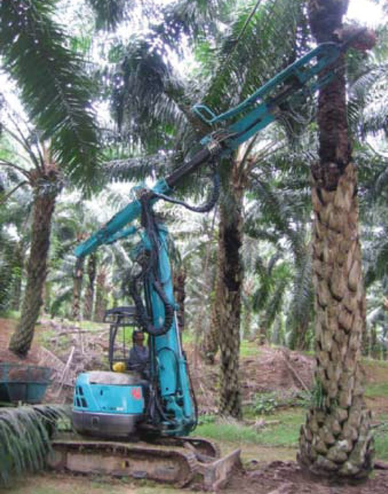
Palma · máquina para palmas altasImagem: Teoh e Lai, Journal of Oil Palm Research (2024), p. 3 · [M1385] fonte ↗
Fontes[M1234] MPOB, The Potential of Robotics for Efficient and…, p. 1 palmoilis.mpob.gov.my ↗[M377] Malaysian Palm Oil Board, Oil Palm Economic Performance in Malaysia and R&D…, p. 11-12 jopr.mpob.gov.my ↗[M1268] CNA, com Cepea, Produtividade e emprego: novas diretrizes para as…, p. 14 cnabrasil.org.br ↗[M1385] Teoh, K. H., Autonomous Harvesting Robot for Oil Palm…, p. 2-3 jopr.mpob.gov.my ↗
Colheita da macaúba · mão de obra e segurança do trabalho
Macaúba: a colheita depende de gente; o risco é descrito, mas não foi medido
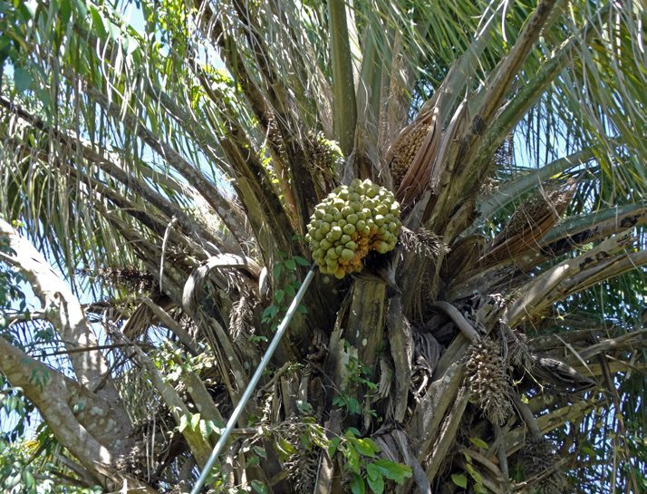
Palmeiras · vara de coleta no cacho (INPA)Imagem: INPA, cartilha de ferramentas de coleta (2015), p. 18 · [M1418] fonte ↗
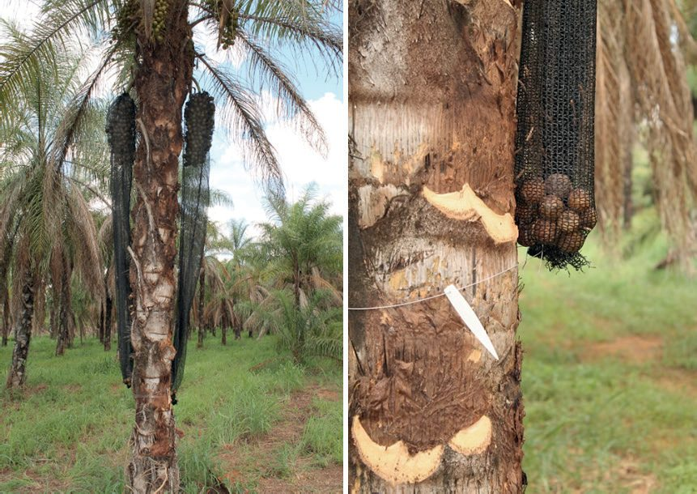
Macaúba · cachos em tela (Embrapa Cerrados)Imagem: Embrapa Cerrados, Boletim 355 (2020), p. 11 · [M1395] fonte ↗
A altura do problema: até onde cada ferramenta alcança
Em metros, segundo quem desenvolveu ou testou cada uma · faixa verde: estipe da macaúba adulta
Como se colhe
Do chão ou com foice em vara; não há máquina no mercado (Embrapa Cerrados, UFV e UFLA).
Risco
Nenhum número de acidente na macaúba; no açaí, 90% de 33 coletores já caíram.
Fontes[M1395] Embrapa Cerrados, p. 8 ↗[M1390] Villar e outros ↗[M1265] Universidade Federal de…, p. 9 ↗[M1418] Instituto Nacional de…, p. 9, 11-12 ↗[M1422] Instituto Nacional de… ↗[M1277] Ministério da Agricultura e…, p. 1 ↗[M1256] Embrapa, p. 6 ↗[M1385] Teoh e outros, p. 2 ↗[M1383] Megalingam e outros ↗[M1388] Zheng e outros ↗[M1400] Kaatech ↗[M1410] Universidade Federal Rural… ↗
por controle remoto, na loja do fabricante; o Amapá comprou 44. Sem ensaio independente.
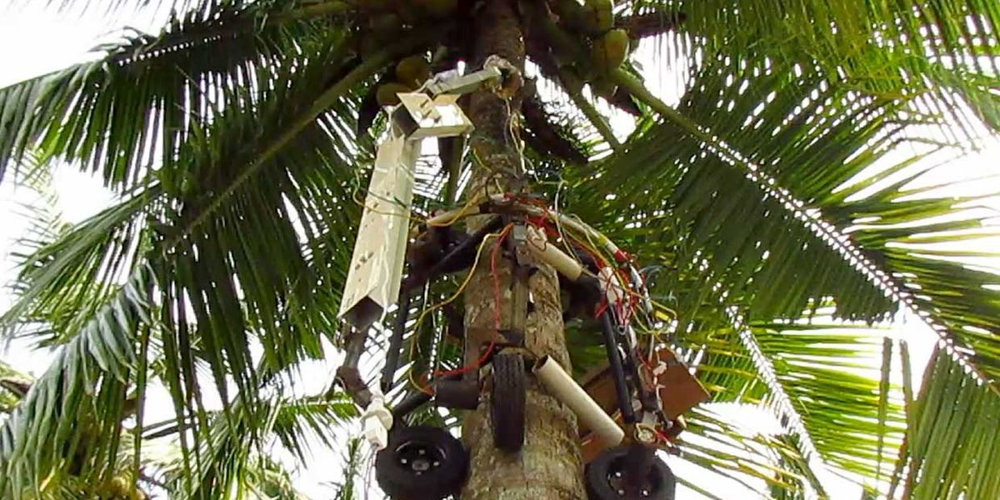
Coco · Amaran (Índia)Imagem: IEEE Spectrum (2020), sobre o Amaran · [M1403] fonte ↗
Coco · teste dos autores
21,9 × 11,8 min
por coqueiro: o robô foi mais lento que o colhedor (IEEE Spectrum).
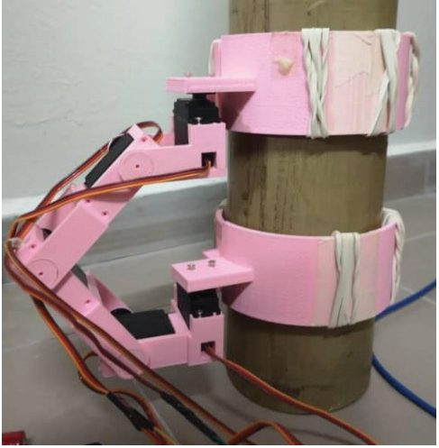
Palma · protótipo escaladorImagem: Teoh e Lai, Journal of Oil Palm Research (2024), p. 9 · [M1385] fonte ↗
Palma · protótipo
5 travas
a subida ainda não é confiável; os protótipos pedem montagem à mão.
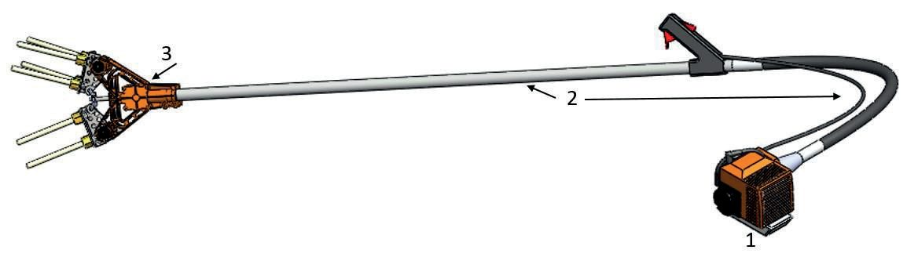
Macaúba · colhedor vibratório (UFV)Imagem: UFV e UFLA, Semina: Ciências Agrárias (2018), p. 13 · [M1265] fonte ↗
Macaúba · nenhum robô
434 kg/h
do chão: colhedor portátil, medido pelos inventores.
Fontes[M1400] Kaatech, AçaíBot — página do produto… ↗[M1399] Governo do Estado do Amapá —…, Diário Oficial do Estado do…, p. 1 ↗[M1383] Megalingam e outros, Amaran: An Unmanned Robotic… ↗[M1403] IEEE Spectrum, Amaran the Tree-Climbing… ↗[M1385] Teoh e outros, Autonomous Harvesting Robot…, p. 3, 8, 16 ↗[M1386] Universidade Federal de…, Disposição construtiva em… ↗[M1265] Universidade Federal de…, Development and evaluation of…, p. 9 ↗
Satélite: mapear perenes já funciona; a IA do tempo opera ao lado da física
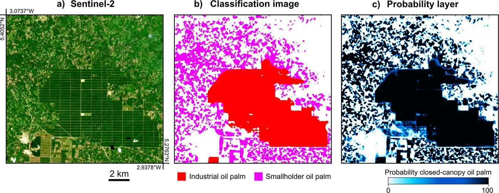
Palma · imagem, classificação e probabilidade (mapa global)Imagem: Descals et al., Earth System Science Data (2021), p. 9 · [M1376] fonte ↗
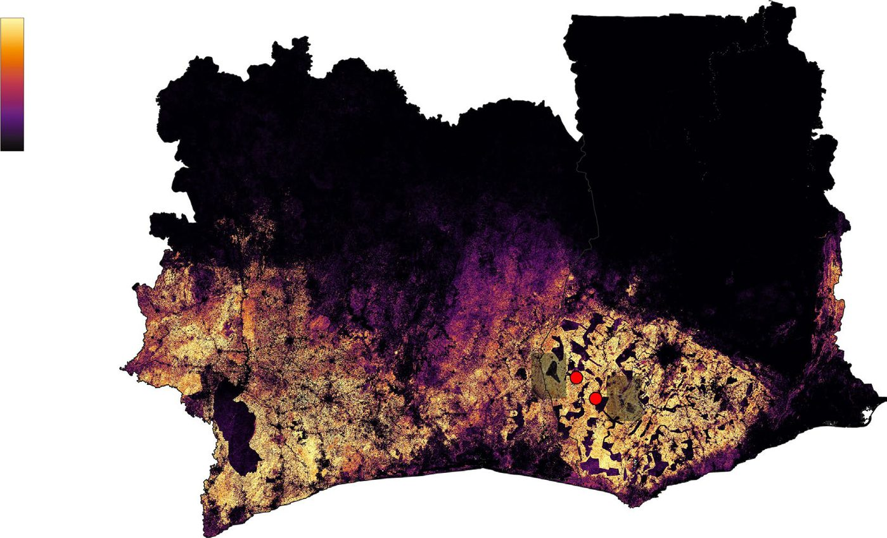
Cacau · mapa da Costa do MarfimImagem: Kalischek et al., Nature Food (2023), p. 2 · [M1377] fonte ↗
88% · 77%
Palma · mapa global
de acerto nos plantios industriais e nos de pequenos produtores; perde os plantios jovens.
91,7%
Cacau · África Ocidental
de acerto na validação de campo às cegas; detecta plantios jovens.
90% · 97,2%
IA do tempo
dos alvos em que dois modelos de IA superaram o modelo físico, segundo os autores; a chuva ficou fora do placar.
Recordes
De calor, frio e vento: o modelo físico venceu em quase todos os prazos (Science Advances, 2026).
Fontes[M1376] CREAF, Liverpool John Moores University, CIFOR, Comissão Europeia, High-resolution global map of smallholder and…, p. 1, 8 doi.org ↗[M1377] ETH Zurich, Universidade de Copenhague, UCLouvain, Universidade de Cambridge e outros, Cocoa plantations are associated with…, p. 3-4, 8 doi.org ↗[M1338] Google DeepMind e Google Research, GraphCast: Learning skillful medium-range global…, p. 1, 4 arxiv.org ↗[M1337] Google DeepMind, Probabilistic weather forecasting with machine…, p. 1, 4 doi.org ↗[M1343] Karlsruhe Institute of Technology, Physics-based models outperform AI weather…, p. 1-3 doi.org ↗
Seis perguntas que o mercado respondeu antes de escalar a IA
01
Qual dor medida vem primeiro?
Os casos com resultado partem de um problema do negócio, com métrica e dono.
casos 1 e 2
02
A base de dados e de campo está de pé?
Conectividade, dados e estrutura levaram anos e vieram antes da IA generativa.
o caminho
03
Quem patrocina e quem decide?
Patrocínio executivo, comitê e champions aparecem nas jornadas públicas e nas sessões.
sessões executivas
04
Qual é o canal oficial e a regra de dado?
Proibir funciona pouco; a conta oficial cresce quando a empresa oferece o canal.
do uso por fora ao canal oficial
05
Como o valor é medido, caso a caso?
A conta da IA se controla pelo consumo e pelo modelo do tamanho da tarefa.
casos 3 e 4
06
Onde a pessoa decide e onde a máquina decide?
No campo, a decisão segue humana, com exceções estreitas, dentro de uma regra definida por pessoas.
casos 1 e 2 · autonomia
Leitura nossa, macro. Não é diagnóstico da Acelen nem recomendação de ferramenta. As imagens vêm das fontes citadas em cada slide, com a origem indicada, para fins de estudo; o detalhe e todas as fontes estão na apresentação executiva (BIA-ACL-AE-01) e no Report Final (BIA-ACL-RF-01).